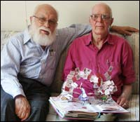

¿Hay un doctor en el lugar?
Una tal Catherine Connelly me ha escrito sobre la “Asociación de Clarividentes Profesionales”, propiedad de su director Keith Ward, quien afirma tener un doctorado en “Estudios paranormales”. No sabía que esa “ciencia” o disciplina otorgara doctorados. Le escribí al Sr. Ward y recibí rápidamente una noticia de que la Asociación iba a perseguir a alguien que había realizado declaraciones que les disgustaban. ¿Una referencia a la señorita Connelly, quizá?
Como sea, examiné las afirmaciones del Sr. Ward, y se basan en los viejos trucos que han aportado fortunas a los farsantes. En http://www.psychicreadings.org.uk/freeonlinegames.htm verán una selección de “juegos psíquicos” que están pensados para seducirlos, preparándolos para separarlos de su dinero. Estos son los normales trucos y engaños de elección forzada, pero es raro verlos a todos en un solo sitio. Encontrarán esto:

Antes del viejo truco de Internet “elija una de estas cinco cartas”, que estoy seguro de que más del 95% de los navegadores de Internet han visto ya, aparece esta pregunta: “¿Pueden nuestros clarividentes predecir realmente cuál carta elegirá usted en este gran juego que puede jugar en línea?”. El truco funciona (a menos que uno sea más inteligente que un poste) y uno luego puede moverse a la “Prueba de PES”; en la que se muestran las cinco cartas normales de símbolos Zener (círculo, signo más, líneas onduladas, cuadrado y estrella de cinco puntas), y se le pide a la víctima que elija “la que le resulte más atractiva”. Como sabe cualquier mago o mentalista, la elección favorita es, por lejos, la estrella, pero sólo para proporcionar una oportunidad mejor de detección psíquica, el diseñador de la página hizo el símbolo de la estrella un poco más grande que los otros cuatro, como puede verse en la ilustración adjunta, tomada del sitio web de “lecturas psíquicas”. Agregue a ello la ubicación de este símbolo en la cuarta posición, lo que hace más probable que se lo elija porque la persona promedio tenderá a no elegir ninguno de los símbolos ubicados en los extremos de la fila ni el central, y las líneas onduladas no presentan una forma fácilmente identificable.
En el juego de las “Tres predicciones”, las fuerzas místicas afirman: “Si le pedimos pensar en un país, un animal y una fruta y le pedimos que haga unos pocos cálculos simples, ¿cree que podremos predecir las respuestas que nos dará? ¡Podemos afirmar una exactitud de un 98%! ¿Quiere probarnos? Entonces aquí vamos…”
Piense un número del 1 al 10.
Multiplique ese número por 9. (Si la respuesta tiene 2 dígitos, súmelos para formar un solo dígito.)
Reste 5.
-
Ahora piense en un país que empiece con la letra correspondiente al número indicado abajo:
1 2 3 4 5 6 7 8 9 A B C D E F G H I
Nota: seguir las reglas hasta el momento inevitablemente lo conduce a uno al dígito “4”, y por lo tanto a la letra “D”. Sólo hay tres posibilidades: Dominica, Dominicana y Dinamarca. No, Dubai no es un país, sino un emirato de Arabia Saudita. ¿Supongo que eligió Dinamarca? Seguimos…
Ahora piense en un animal que empiece con la última letra del nombre del país.
¿Y qué animal obtuvo? ¿Vive en Australia? [1]
Ahora piense en una fruta que empiece con la última letra del nombre del animal.
¿Me salió “naranja” sólo porque vivo en Florida? No lo creo… [2]
¿Lo hizo todo? Ahora haga clic más abajo para ver si predijimos correctamente el país, animal y fruta en el que está pensando.
Síp, al hacer clic encontré que habían “adivinado” Dinamarca, canguro y naranja. ¡Guau! ¡Pero esperen! ¡El fraude sigue! Continúan con otro “juego psíquico”:
¡Elija CUALQUIER número y leeremos su mente! ¿Piensa que no podemos leer su mente? Bueno, para hacerlo un poco más difícil, ¡puede pensar CUALQUIER número que quiera!
Anote su número elegido.
Súmele 6 a su número.
Luego sume 10.
Luego sume 26.
Luego reste 22.
Ahora sume 30.
Ahora bien, toda esta aritmética simple significa simplemente que ¡usted le suma 50 a su número elegido, y luego le resta el número elegido! Sin sorpresa, obtuve 50. ¿Usted también? ¡Qué farsa! Y los abogados también han estado ocupados, como era de esperarse. En el tamaño más pequeño de letra de la página dice: “Esto es sólo para entretenimiento. No se utiliza misticismo ni magia”. En texto aún más chico dice: “Advertencia: el contenido de este sitio web se brinda a nuestros visitantes sólo para propósitos de entretenimiento. Ni este sitio ni sus dueños son responsable por ningún daño directo, incidental, consecuente, indirecto o punitivo resultante de su acceso a este sitio o a cualquier contenido de este sitio. No se garantiza exactitud”.
¿Qué tal una advertencia de que no se hacen responsables de los accidentes producidos por la gente que se cae al suelo de la risa? Pero no nos distraigamos: no importa cuán tonto o ridículo sea el material que aparece en el sitio http://www.psychicreadings.org.uk/, siempre habbrá un cierto número de personas desesperadas e ingenuas que se suscribirán a él y por lo tanto serán estafadas.
Al momento de “imprimir” estas líneas, notamos en su página web que el “Doctor” Keith Ward ya no es un doctor. ¿Cómo pasó eso?
La fusión fría vuelve a entibiarse
El lector Jim Mitchell alega:
Leí con interés su comentario del 22 de octubre como lo hago cada semana y, aunque me desilusionó, no me sorprendió el apoyo de [Arthur C.] Clarke a la fusión fría. Después de todo, es bastante consistente con la Ley de Clarke de su texto “Perfiles del Futuro” (Harper & Row, 1962) que afirma:
Cuando un científico distinguido pero anciano afirma que algo es posible, casi con seguridad tiene razón. Cuando afirma que algo es imposible, probablemente está equivocado.
Nada menos que un escéptico tan admirable como Isaac Asimov se refirió a la Ley de Clarke en una de sus colecciones de artículos de ciencia llamada “Quasar, Quasar, Burning Bright” (“Cuasar, cuasar, que ardes brillante”, Mercury Press Inc., 1976, 1977). El último artículo se llama “Corolario de Asimov”. En él, Asimov apoya en general la Ley de Clarke pero con una calificación importante como el corolario de marras:
Sin embargo, cuando el público se abalanza hacia una idea que es rechazada por científicos distinguidos pero ancianos y apoya esa idea con gran fervor y emoción, entonces los científicos distinguidos pero ancianos, después de todo, probablemente tienen razón.
¿Cómo alguien que se describe a sí mismo como un “liberal anticuado e igualitario” como Asimov puede emitir un punto de vista tan elitista?
La respuesta es que los seres humanos tienen el hábito (uno malo, quizá, pero inevitable) de ser humanos; lo que equivale a decir que creen en lo que les da comodidad.
Continúa:
[…] a la gente le encanta, por lo general, creer lo dramático, y que sea increíble no impide la creencia, sino que, en vez de ello, la ayuda positivamente.
Y finalmente:
[…] a la gente le gusta sentirse rebelde contra alguna poderosa fuerza represiva… siempre y cuando esté segura de que es lo bastante seguro.
Y la rebelión contra el “establishment científico” es infinitamente más segura que la rebelión contra cualquier establishment real. Parece que, cuando se eligen herejías a las cuales adherir, la probabilidad de que la herejía sea cierta no es una de las tres consideraciones más importantes para la mayor parte de la gente.
Como ejemplos de herejes que inicialmente fueron suprimidos por el establishment, Asimov sugiere los ejemplos familiares de Galileo y Darwin pero también los casos menos familiares de August Laurent (un químico orgánico), Julios Robert Meyer (un defensor temprano de la ley de la conservación de la energía) y Alfred Lothar Wegener (tectónica de placas). Hasta el punto en que esta gente es conocida por el público profano son mártires de la arrogancia del establishment; especialmente entre aquéllos que ven cualquier herejía defendida como apoyo por su propia teoría favorita despreciada. Pero Asimov señala, como pocos lo hacen, que ningunos de esos ejemplos fueron defendidos jamás por el público general hasta después de que el “establishment científico” se avino a apoyarlos.
La invariabilidad de que la gente apoye a los que andando el tiempo se demuestra están equivocados e ignore a los que con el tiempo se demuestra que tenían razón llevó a Asimov a refinar su corolario convirtiéndolo en:
Si la herejía científica es ignorada o denunciada por el público en general, hay una probabilidad de que sea cierta. Si una herejía científia es apoyada emotivamente por el público en general, es falsa casi con seguridad.
Asimov era demasiado honesto intelectualmente para afirmar esto sin buscar un contraejemplo, y encontró uno sin gran esfuerzo. El público en general adoptó la vacuna contra la viruela de Edward Jenner (irónico, considerando la opinión popular actual) incluso aunque el establishment aún estaba escéptico. Fue uno de esos casos raroes en los que el universo eligió comportarse como todos querían que lo hiciera. Al igual que un reloj que da bien la hora dos veces al día, los hechos a veces se alínean con nuestros deseos.
Perdone este breve resumen de un artículo de Asimov tan bien pensado y bien escrito, según solía hacerlo. Debería leerlo, si puede (creo que ya está agotado) pero en líneas generales es una revelación de las formas en que la gente inteligente llega a creer cosas ridículas y pienso que usted, entre toda la gente, no desconoce los mecanismos.

¿Por qué Isaac tuvo que dejaros de forma tan trágica y tan pronta como lo hizo? Todavía lo necesitamos…
Un regalo por venir
Pronto les contaré un encuentro fascinante que tuve en Alemania con el doctor Rainer Wolf, del instituto Biocenter en la Universidad de Wurzburgo, biólogo, microscopista electrónico e investigador de las ilusiones de la percepción. Involucra ese fascinante fenómeno “nuevo” que ocurre cuando un rodamiento magnetizado se vuelta dentro de un trozo de tubo de cobre. Si eso no le revela de qué se trata, todavía no ha visto este suceso maravilloso. Por ahora, sólo les diré que un ingeniero de la compañía Magnet Sales & Manufacture Corporation de Culver City, California, una compañía que vende exclusivamente imanes y materiales magnéticos de toda clase, me ha informado oficialmente que un rodamiento no puede magnetizarse. Extraño. Aquí tengo unos pocos que están fuertemente magnetizados. ¿Cómo puede ser?
Les encantarán los varios aspectos interesantes e inesperados de este fenómeno de rodamiento en un tubo…
Para prepararse, consíganse un rodamiento fuertemente magnetizado (aunque sea imposible) y más o menos un metro de caño recto de cobre que deje entrar apenas al rodamiento. Experimenten dejándolo caer a lo largo del tubo, y yo los agasajaré con futuras maravillas…
Próximamente.
Martin Gardner cumple felices noventa
Mi querido amigo Martin Gardner recibió una masa de tarjetas de cumpleaños que llegaron a la JREF desde todo el mundo, y como era de esperarse quedó sorprendido y complacido. Gracias a todos. También hice que unas pocas personas muy importantes y famosas lo llamaran ese día. Martin empezó a agradecer cada tarjeta individualmente, pero pensé que sería un esfuerzo muy grande para él, de modo que a sugerencia mía escribió este agradecimiento general a todos los que le enviaron sus buenos deseos:
¡Tu pedido a los lectores de tu sitio web para que me enviaran tarjetas para mi nonagésimo cumpleaños el 21 de octubre produjo tal diluvio de sobres que me tomó casi una hora abrirlos! Obviamente no puedo responder a todos los que tan amablemente me enviaron tarjetas, pero estaría agradecido si publicaras mi profundo mensaje de agradecimiento. Me conmovió fuertemente la respuesta a tu pedido, no sólo desde los EE. UU. sino desde el resto del mundo.
¡Fue un gran gusto, Martin!
Astrología e ingeniería eléctrica
El lector Martin Cowen estaba preocupado porque la IEE (Institución de Ingenieros Eléctricos del Reino Unido) aparentemente adoptó la astrología. Le escribió a Sally Hellmann en la IEE:
He sido un miembro de la IEE desde 1988 y me indignó descubrir que el Diario ahora contiene una basura anticientífica tal como los signos del zodíaco. El sistema tropical se inventó en la época de Tolomeo y la precesión de la Tierra implica que ahora estamos a unos días de distancia incluso del supuestamente más exacto sistema sideral, al igual que estamos desviados un signo completo del sistema tropical. La idea de que las constelaciones sean algo más concreto que la forma en que se alínean las estrellas cuando se ven desde un lugar particular en el universo, cuando en realidad están mucho más distantes entre sí de lo que parece, es una noción precientífica basada en la ignorancia.
Me sorprende que una organización de ingenieros profesionales pueda de hecho apoyar tal disparate incluyéndolo en su diario, y como resultado devolveré el mío. Me gustaría que por mi dinero me proporcionaran uno sin referencias astrológicas (que vulgarizan la astronomía). “La astrología no es inofensiva ni divertida, y debemos verla como enemiga de la verdad” —Richard Dawkins.
El diario solía tener datos tales como la tabla de constantes físicas, símbolos y unidades del SI [Système International d’Unités], etc., y que a esto lo reemplacen ciertos símbolos mágicos es efectuar una reducción en la utilidad del diario para los ingenieros en activo y muestra los effectos del recorte irreflexivo de costos por parte de la IEE.
Para la gran satisfacción del señor Cowan, recibió una respuesta.
Me pongo en contacto con usted en relación con sus comentarios sobre el diario del 2004 y me gustaría aprovechar la oportunidad para agradecerle por tomarse el tiempo de darnos su opinión. Se eligió el sistema tropical, en lugar del sideral, por ser esta la práctica normal para los fabricantes de diarios.
De nuevo, gracias por su aporte; se ha tomado nota de él y se usará para ayudarnos en la producción del diario de 2005.
Sally Hellmann
Le pedimos al Sr. Cowan que nos informe el contenido del próximo diario de la IEE…
Otro chip milagroso
El lector Lars Streiberger tiene más información en relación con el artículo “Una victoria menor en Alemania”, que publicáramos aquí:
Leer el e-mail de Michael Ortmann en el comentario de esta semana me recuerda un “chip” similar alemán que se supone que ahuyenta mágicamente toda la radiación maligna de todos sus dispositivos electrónicos. Cómo hace esto pegándolo fuera de su teléfono, monitor, etc., sin fuente de energía, me confunde un poco pero tiene que ver con un galimatías bastante impresionante. http://www.gabriel-tech.de/ (lamentablemente en alemán) es la página que les contará todo sobre las maravillosas ventajas de vaciar su billetera en dirección a ellos.
Me divertí a principio de este año intentando convencer a mi empleador de no forrar los bolsillos de esta gente, ya que me parecía una estafa total que hacía presa de los vulnerables. Con el tiempo no se compraron chips, pero pude escuchar un extraño discurso de parte de mi jefe (que es antroposofista) sobre que no confiaba en la “ciencia birkoniana”.
Si este alemán acusado es el responsable del Chip Gabriel me complacería enormemente poder informarle a mi jefe lo que le sucedió. Si el chip Gabriel no tiene nada que ver con este hombre entonces con gusto llamaré la atención de este fiscal público sobre la tecnología Gabriel.
Sin duda hay mucha más gente por ahí haciendo este tipo de estafas, pero al menos se los puede convencer de no establecerse en Alemania…

Por más que intenté, no pude descubrir lo que puede ser la “ciencia birkoniana”. Debe ser legítima, ya que un antroposofista la rechaza. ¿Quizá es no prestar la bastante atención a los espíritus y elfos de los bosques?
Un retorno desde la oscuridad
El lector Richard Rockley me recuerda de un grupo del que me había olvidado, esa pandilla desorientada de “PsiTech”. Estuvieron haciendo afirmaciones absurdas por un tiempo, y creí que la realidad los había alcanzado. No es el caso, informa Richard:
¿Se acuerda de PsiTech, los supuestos visores remotos que usaron sus superpoderes de forma tan graciosa para determinar dónde buscar el cadáver de Elizabeth Smart? (Nota: estaba y aún está bien viva.) También “vieron remotamente” la caída del vuelo 587, en Nueva York en 2001, señalando al terrorismo como causa. Del sitio de PsiTech: http://www.remoteviewing.com/reports/111201.htm
La caída del vuelo 587 de American Airlines - Informe preliminar. Fecha: 12 de noviembre de 2001 18:00 PST
Todos los datos contenidos en este informe las obtuvo PSI TECH International, Inc. utilizando técnicas de Visión Técnica Remota.
Los resultados preliminares sugieren lo siguiente: la causa de la caída fue una serie de explosiones causadas por una bimba de inyección de combustible dañada intencionalmente. Durante los procedimientos de despegue, los motores de un avión a propulsión funcionan a máxima potencia. El inyector de compustible del vuelo 587 fue modificado para que durante el despegue la vibración extrema creara una rotura y un derrame de combustible produjera la explosión del motor. Una gran cantidad de combustible se derramó en los motores mientras se encontraban al máximo. El motor izquierdo explotó rompiéndose del ala y golpando la sección de cola, arrancándola y haciendo que el avión cayera en espiral hacia el suelo.
Los aspectos mas perturbadores de los datos sugieren “infiltración mecánica”. La aeronave la alteró alguien con conocimiento mecánico suficiente que sabía que la tensión específica producida por la vibración durante el despegue produciría la rotura del sistema de bombeo de combustible produciendo un derrame de combustible y la explosión resultante.

Caray, apenas ocurrido el 11-S y presumen terrorismo, aunque sólo se “sugiere”, como habrán notado. ¿Quién lo hubiera pensado? Como sea, un informe oficial del Comité Nacional de Seguridad en el Transporte (NTSB), en http://www.cnn.com/2004/US/10/26/ntsb.flight587.ap/index.html, concluyó:
El copiloto del vuelo 587 de American Airlines causó el choque de noviembre de 2001 en Queens, Nueva York que costó las vidas de 265 persoas, informó el martes el personal de la agencia de seguridad de la aerolínea nacional.
El investigador Robert Benzon del personal del Comité Nacional de Seguridad en el Transporte dijo que la respuesta del copiloto a la turbulencia, apenas segundos luego de que el avión Airbus A300-600 despegó del Aeropuerto Internacional John F. Kennedy de Nueva York, fue “innecesaria y agresiva”.
Otro fracaso de PsiTech. Siguen simulando que pueden realizar “visión remota” a pesar de estas fallas. Según recuerdo, afirman que obtuvieron la “tecnología” de la VR del gobierno de los EE.UU. luego de sus años de investigación. ¿No refutó usted esto hace años?
Bien, como decimos con frecuencia, nosotros no “refutamos”. Sólo le pedimos a los que hacen las afirmaciones que las prueben. PsiTech ha sido coherente en negarse a someter a prueba sus afirmaciones, así que simplemente los ignoramos. Parece, por lo que hemos visto aquí, que se refutaron ellos mismos de forma decisiva…
Se vende falsa vacuna contra la gripe
El lector Charles Blue nos cuenta de un aviso muy peligroso, falso y curanderil que ha estado apareciendo en su área de los Estados Unidos. No olviden que las agencias del gobierno saben esto muy bien, y seguramente pueden darse cuenta de que podría matar a los ciudadanos que se lo crean, pero no harán nada sobre ello, en especial cerca de una elección, porque podrían perderse votos. Simplemente no les importa un rábano. Charles nos cuenta:
Quería comentar sobre un aviso de “Influenzium” que ha estado saliendo repetidamente en el Washington Post Express, el resumen del venerable periódico del Potomac para pasajeros del ferrocarril subterráneo. Como en otras partes del país, hay escasez de vacuna contra la gripe en esta zona. El condado de Montgomery incluso inició una lotería por las 800 dosis que tiene. Así que con la demanda alta y los temores también, apareció el siguiente aviso:
¿Se perdió la vacuna contra la gripe? ¡Influenzium es la solución! Creado a partir de la vacuna real contra la gripe. Se usa para impedir y tratar los síntomas de la gripe. Registrado en la FDA. [Signifique esto lo que signifique. CB.] Seguro: no tiene efectos secundarios. [Al menos eso es cierto. CB.] Lo entregamos en su domicilio en un plazo de 1 a 3 días. Llame ya.
Esto es un producto de Washington Homeopathic Products, en http://www.homeopathyworks.com/. Examinando el sitio web, no da absolutamente ninguna información sobre el producto, sólo que se vende en dosis de “200C” o de “30X”. AL leer esto, puedo imaginar la razón de que la gente salga con la idea de que esto es alguna clase de vacuna real contra la gripe.
Bueno, como bien sabes, Charles, no lo es. Esta “vacuna” contra la gripe es falsa, un fraude, un timo, un chanchullo, un fraude, una mentira, un camelo. Ahí está. Eso es lenguaje sobre el que se puede iniciar juicio, y Joe Lillard y Linda Sprankle-Lillard, los propietarios registrados de Washington Homeopathic Pharmacy, en Fairfax Street 33, Berkeley Springs, Virginia del Oeste, 25411, así como sus proveedores, son bienvenidos a demandarme por difamación si lo desean. Saben dónde encontrarme.

Ahora bien, creo que Joe y Linda bien pueden creer honestamente que el agua mágica que venden es un remedio efectivo contra la gripe. Con toda probabilidad, se engañan a sí mismos. Los verdaderos culpables aquí son los “expertos” que preparan y distribuyen esos remedios falsos. Estoy ejerciendo esta acción porque el gobierno de los Estados Unidos no harán nada para impedir que tales estafas despojen a los ingenuos y los vulnerables, ni a nivel estatal ni federal. A nadie del gobierno le importa ; a los ciudadanos se los puede engañar y mentir, pero los estafadores se libran de ello porque saben que están a salvo del encausamiento debido a la inercia del sistema. Los productores de agua inútil tendrán considerables ganancias de esta falsificación, y para cuando cualquiera de nuestras agencias haya despertado a la readliad, el temor a la gripe habrá pasado, el temor habrá pasado, el dinero estará en el banco, y ellos esperarán al próximo fraude de salud que seguramente estará preparándose.
LA ACCIÓN CONTRA UN PELIGRO TAN CLARO Y PRESENTE A LA SEGURIDAD PÚBLICA ES PERFECTAMENTE POSIBLE BAJO LAS LEYES EXISTENTES. LOS POLÍTICOS Y LOS OFICIALES DEL CUMPLIMIENTO DE LA LEY A LOS QUE SENCILLAMENTE NO LES IMPORTA, LOS QUE PERMITEN QUE ESTO CONTINÚE, Y ESTOY INTENTANDO INCENDIARLOS. ¿POR QUÉ TENGO QUE OCUPARME YO DE ESTO? ¡SIMPLEMENTE PORQUE HAY QUE AVERGONZARLOS (¡SI ES QUE SE PUEDE!) PARA QUE HAGAN AQUELLO PARA LO QUE SE LOS ELIGIÓ O NOMBRÓ!
Estoy esperando…
Un resultado satisfactorio en Canadá
En este artículo encontrarán el tema al que se refiere el siguiente lector:
Muchas gracias por ayudar a exponer la pseudomedicina religiosa y la ciencia torcida que adoptó un colega en el sitio web de nuestro Colegio. El Colegio ahora ha retirado el enlace a su supuesta investigación. Gracias a los que supongo un número importante de e-mails de lectores al webmaster del Colegio, se obtuvieron resultados positivos con rapidez.
El mensaje lo firma Marten Lettinga, profesor de quimica y física del Colegio Universitario de los campos de Cariboo, Kamloops y Williams Lake, en Columbia Británica, Canadá.
Marten, me alegra haber podido ser útil. Sé de bastantes de nuestros lectores que enviaron mensajes por e-mail, y podemos estar bastante seguros de que fueron de ayuda para retirar el disparate.
El doblacucharas se queja
Una carta que apareció en el periódico “The Australian”, luego de publicar un obituario del doctor Jacques Benveniste:
Es típico del prejuicio que acosa la carrera de Jacques Benveniste (Time & Tide, 27/10) que atrastre usted el nombre de un mago llamado James Randi. Luego se le acredita a Randi “desenmascarar los trucos de doblado de cubiertos de Uri Geller”. Más allá del hecho de que mi capacidad con los metales es un fenómenos de la física comprendido a medias y no un truco, tanto Randi como yo somos irrelevantes en la historia de la vida de Benveniste.
Hubiera sido más informativo si el obituario se hubiera referido al hombre que nos introdujo a muchos a su sorprendente investigación, el premio Nobel Brian Josephson.

La carta está firmada por Uri Geller. ¿Apela a Josephson para establecer sus credenciales? ¡Josephson es el hombre que desafió públicamente a la Sociedad Física Estadounidense para realizar pruebas de las afirmaciones de Benveniste, y luego se retiró silenciosamente cuando ellos (y la JREF aceptaron con entusiasmo! ¿Y qué cosa es “comprendida a medias” sobre la capacidad del Sr. Geller? ¡Eso es como decir que el truco de sacar un conejo de un sombrero se comprende a medias!
Aún más sobre Trudeau
El lector Larry Barowski ha examinado el tema de Kevin Trudeau que discutimos aquí las últimas dos semanas. Observa:
Parece que vender un libro relacionado con las “curas naturales” que no promociona ningún producto en particular, Kevin Trudeau puede estar obedeciendo la letra de la ley en relación con la restricción en su contra, pero ciertamente no la intención. Sin embargo, no soy un abogado, y podría estar interpretando incorrectamente la orden final. Se encuentra disponible en http://www.ftc.gov/os/caselist/0323064/040907stip0323064.pdf.
La orden le permite específicamente a él (y a otros acusados) para promover o vender un libro que:
No se refiera, directa o indirectamente, a ningún producto, programa o servicio registrado o de marca que los acusados promocionen;
no es, directa o indirectamente, un aviso para ningún producto, programa y servicio, y
no se venda, promocione o realice mercadeo, directa o indirectamente, juntamente con producto, programa o servicio alguno que se refiera al contenido del libro, boletín, publicación informativa o aviso publicitario informativo
La palabra “indirectamente” es bastante vaga. ¿Cuánta indirección se acepta? ¿Un libro que sugiere que la alcalinidad cura la enfermedad un aviso indirecto para el “calcio coralino”?
Sólo pensar en Trudeau hace que mis células se vuelvan ácidas.
Noruega reacciona
La lectora Rakelle Østentad me recrimina:
Mi novio lee su sitio web, y me comenta cuando se menciona a Noruega en su comentario. Esas menciones casi invariablemente insinúan que los noruegos como grupo somos unos tontos crédulos, como en la carta de su último comentario en la que se informa que el 80% de los que se molestaron en responder a una encuesta de un periódico pensaban que los psíquicos debían ayudar a la policía. Es bueno que tenga usted seguidores entusiastas en Noruega, pero ojalá fueron menos entusiastas a la horia de hacernos parecer paletos retrógrados.
Acabo de hacer una búsqueda en el segundo periódico más grande del país sobre el programa televisivo en cuestión, y obtuve algo más de una docena de artículos que mencionan que nada del programa ayudó jamás a resolver un delito, que la mayor parte de los precintos policiales han rechazado su ayuda cuando la ofrecen, una mención de que a los psíquicos no se les prohíbe la entrada a los casinos, y una teoría de que la gente que cree tener capacidades psíquicas puede tener daños cerebrales. El último artículo es una larga historia sobre los psíquicos que no resuelven crímenes, escrita ayer como reacción a esta pobre mujer que se convirtió en sospechosa luego del programa. La psíquica más conocida de Noruega falló en predecir su propia muerte año tras año tras año. Pidió una autopsia de su cerebro, segura de que se encontraría que algo saldría de lo ordinario. Su cerebro era normal.
Me gustaría que sus lectores tan ansiosos en llamar su atención hacia uno o dos de esos estúpidos programas de televisión fueran más equilibrados en lo que le mandan. Sólo le están dando a esos programas más atención de la que merecen.
Le respondí a Rakelle:
Estoy de acuerdo. ¿Por qué otros noruegos no me cuentan sobre las historias que usted cita? Para mí son igual de importantes…
Una aclaración más importante aún nos es presentada por el lector Harald Hanche-Olsen:
En relación con el artículo de Noruega sobre la mujer llevada para ser interrogada luego de la información dada por ua psíquica en un programa de televisión sobre homicidios sin resolver, creo que deberíamos darle a la policía algún crédito por no ser totalmente estúpida sobre ellos. En una entrevista, el oficial de policía a cargo de los casos negaron categóricamente que la mujer sea, o haya sido alguna vez, sospechosa de algo referido al caso. También negó que la mujer haya sido llevada para interrogarla. “Cuando supimos que la persona había nombrado a una persona, obtuvimos el nombre y dirección y nos pusimos en contacto con ella. Nunca la interrogamos. Hoy tuvimos una conversación con la mujer”. Mi interpretación de la (muy breve) entrevista con este oficial de policía es que tuvieron esa conversación para alejar cualquier rumor que pudiera haberse formado luego del programa de televisión. Esto definitivamente es mejor que escuchar sobre ello de los vecinos, en mi opinión.
Es mucho más triste el resultado de la encuesta (totalmente anticientífica, por supuesto), realizada por el mismo servicio de noticias online: preguntan “¿Debería permitirse a los psíquicos ayudar en las investigaciones criminales?”. De 1920 votos emitidos, el 66% dicen que sí, el 29% que no y al 5% no le importa.
Es igualmente triste el hecho de que este programa tenga espectadores en absoluto, y sea, de hecho, bastante popular. Pero en su mayoría la policía de Noruega, como la policía en el resto del mundo por lo que entiendo, no se entusiasman demasiado.
Sí, como descubrimos cuando podemos saberlo directamente de las organismos de aplicación de la ley, eso es lo que nos dicen normalmente, aunque algunos pocos voceros y titulares de dichos organismos están orgullosos de afirmar que están dedicados a consultar horóscopos, psíquicos y adivinadores. Los medios ignoran cualquier actitud sensata, y se concentran en los aspectos ridículos… como aparentemente sucedió en este caso. Pero el daño está hecho: los falsarios mencionados aquí se beneficiarán de la publicidad, no importa cuán dañina sea realmente…
Perdonen la demora
En Escocia ha habido un paso adelante… aunque bastante tardío, en este caso, como sucedió con la reciente decisión del Vaticano de aceptar la sucia idea de Galileo de que la Tierra no es el centro del Universo. ¿Quién iba a saberlo?
Las brujas acusadas y sus gatos ejecutados hace siglos fueron indultados en Noche de Brujas en la ciudad escocesa de Prestopans. La corte de los barones otorgó los indultos para 81 personas del lugar ejecutados en los siglos XVI y XVII por ser brujas, bajo los antiguos poderes feudales que ahora felizmente están por ser abolidos el 28 de noviembre. Más de 3500 escoceses (principalmente mujeres y niños y sus gatos) fueron condenados, y ahora se han otorgado “indultos absolutos para todos aquellos condenados, así como para todos los gatos involucrados”.
El historiador local Roy Pugh dijo: “Es algo así como un reconocimiento simbólico que esa gente fuera condenada a muerte por ignorancia y paranoia”. Pero espere un momento. Incontables adultos han sido puestos en prisión en los modernos EE.UU. por supuestos ataques criminales a niños. ¡Sus juicios estuvieron teñidos de descripciones de la realización de asesinatos satánicos rituales de hordas de niños! ¿Qué tal si otorgamos indultos también para esta gente? La “evidencia” de las triquiñuelas satánicas provino de niños… y sabemos que los niños no mienten, ¿verdad, amigos? No se ha encontrado ni un solo cuerpo de un niño ejecutado, y sólo las historias cuidadosamente guiadas de los niños se presentaron como evidencia, pero eso no parece importar demasiado. La histeria y la prisa en abrir juicio han hecho el trabajo.
Este es un asunto en el que la JREF no puede participar, pero ustedes pueden. Diríjanse a http://www.fmsfonline.org/ para averiguar el estado actual sobre esta horrenda situación. Y mientras están en ello, envíen a la Fundación sobre el Síndrome del Falso Recuerdo (una entidad sin fines de lucro) una donación, a:
Acabo de enviar la mía por correo…
Mi broma sale mal
El lector Roger Labbe (¡junto con más o menos otros 60 lectores!) señalaron que James Van Praagh (y yo) éramos bastante ignorantes de los hechos sobre Chandra Levy. Escribió:
¡Yo también sé dónde están los restos de Chandra! O, al menos, sé dónde estuvieron. Después de todo, los hallaron en marzo de 2002 en un parque en el Distrito de Columbia. http://archives.cnn.com/2002/US/05/22/levy.body/
Supongo que usted está tan perplejo como yo de darse cuenta de que de algún modo Van Praagh no pudo detectar esto.
Bien, pensé que los lectores lo deducirían de mi mención de esto, y que todos estarían muy conscientes de que el cuerpo de Chandra se halló hace mucho y finalmente fue enterrado en Modesto, California. Estaba siendo burlón; lamento que no se haya entendido así. Mis disculpas.
Aunque el crimen aún no está resuelto, a pesar de los esfuerzos masivos de todos esos poderosos psíquicos que hay por ahí, tengo la idea de que la gente como Van Praagh no será de ayuda en absoluto. Y ese programa de Howard Stern bien puede haber sido una repetición; sospecho que lo era.
En conclusión
Tenía que compartir esto con ustedes: el último aspirante realmente tonto para el premio del millón de dólares de la JREF acaba de enviar una solicitud correctamente preparada y certificada ante notario desde Bélgica, afirmando seriamente que puede sobrevivir en una atmósfera de Ziklon B, el gas letal usado para ejecutar prisioneros en el campo de concentración nazi de Auschwitz, por “al menos 15 minutos”. No hace falta decir que le diremos simplemente que la JREF no puede evaluar ninguna afirmación que ponga al aspirante en serio riesgo. Sin embargo, realmente me tienta remitirlo a la frase de cierre de la solicitud donde digo:
Le recomiendo fuertemente realizar estrictas pruebas doblemente ciegas de cualquier capacidad que crea que puede demostrar, antes de intentar una prueba para este premio.
Amigos, tendremos más de asistentes registrados para TAM3 para cuando lea esto, así que si no es uno de ellos lo insto a que envíe sus papeles pronto a Linda (vea http://www.randi.org/tam3/index.html) para no perdérselo. Hasta ahora, vendrá gente desde Australia, Brasil, Canadá, Chile, Dinamarca, Alemania, Hong Kong, India, Escocia, Suecia, el Reino Unido y por supuesto los Estados Unidos.
La semana próxima, Don Riefler reseña “Cazadores de fantasmas” para nosotros, George W. Maschke de AntiPoligraph.org desafía dicho instrumento, Mario Tamboer de Oostkapelle, Países Bajos, nos cuenta lo último sobre “Jomanda”, la “psíquica” holandesa actualmente popular que prácticamente domina la disciplina en ese país, y otras cosas buenas…

Notas
Comentarios
Comments powered by Disqus